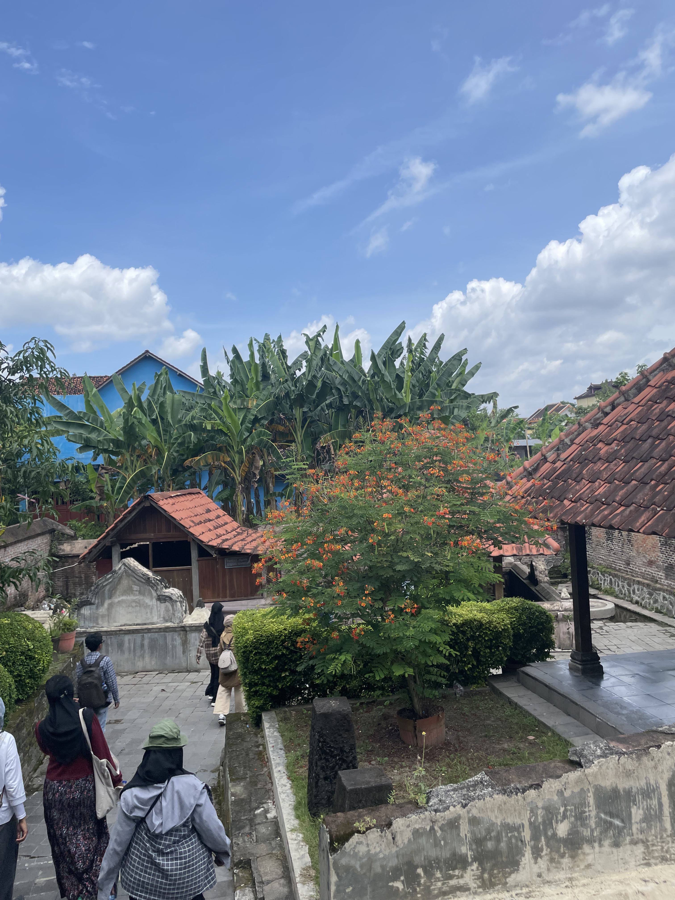
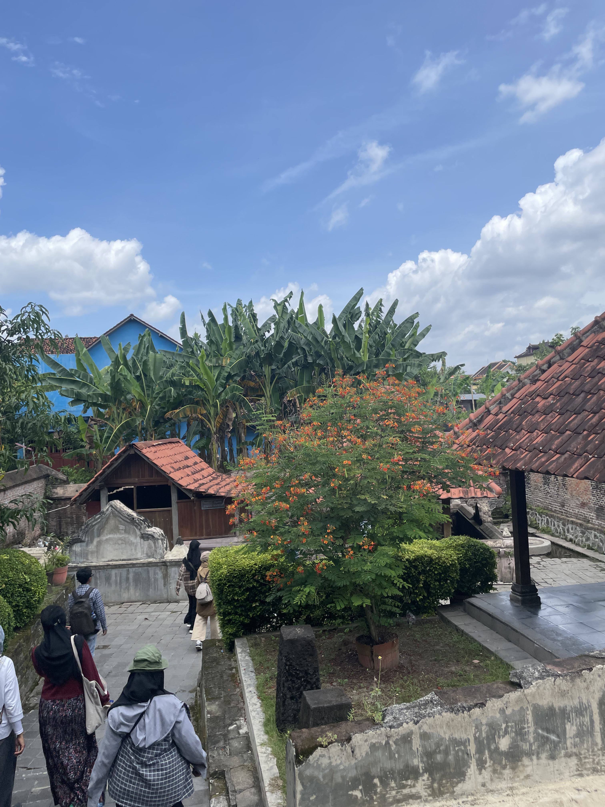

Longkang Kotagede
Longkang Kotagede merupakan salah satu Cafe yang terletak di Between Two Gates, salah satu bangunan bersejarah dan estetik di Kotagede. Cafe ini memiliki tata ruang yang cantik, suasana yang tenang di perkampungan, bangunan joglo dengan furniture antik, buku-buku tentang Kotagede. Berkunjung ke Longkang Kotagede akan membuat Anda merasakan pengalaman bertamu di masa lampau, sambil dijamu dengan minuman kesukaan Anda.
Bangunan yang digunakan untuk cafe ini merupakan bangunan yang sudah ada sejak tahun 1840-an. Oleh karena itu, suasana vintage yang legendaris dan estetis menjadi salah satu ciri khas dari destinasi ini.